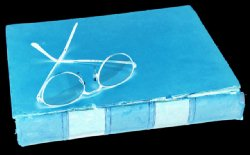

|
Could "Josh" really be Marilyn Manson? | Blood Curdling Screams: A How To Guide | Fame |

 Blood Curdling Screams: A How To Guide The following horrifying account is an actual excerpt from the note left by Michelle Williams the day she disappeared.
... in the art of creating a cheesy movie, one must be very careful to sound scared when one is actually not. This can be very difficult. The best way I find, is to think about my career possibilities being a student filmmaker, and how I probably will never be famous ever. This makes me very angry, and I want to scream. If I think about how I am going to pay off all my student loans, it's even more realistic. ... I find that if I film so that only part of my face shows, people will think I am really scared, but in actual fact I am smiling, thinking of how much I am fooling them all with my fake tears. Boo hoo. Fooled you all. |
© 1999-2003 Super Spoof |
Home